Every fractal rendered by fractal-wallpapers is a two-dimensional escape-time fractal. The renderer draws the Mandelbrot and degree-3 through degree-6 multibrot parameter planes, the Julia dynamical planes those degrees define, and the Phoenix recurrence. On this page I go over what those objects are, and how I pin down one exact view inside one of them.
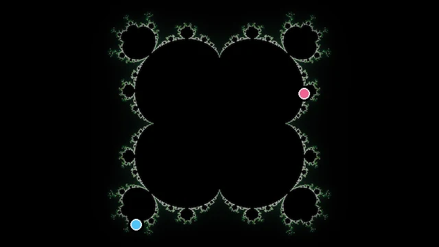
Multibrot, degree 5z⁵ + c
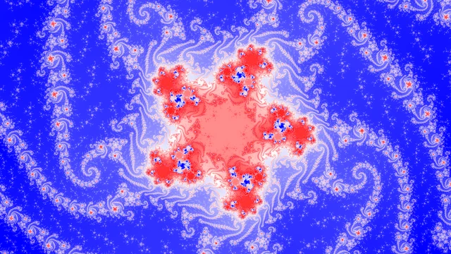
a Julia set at the cyan mark
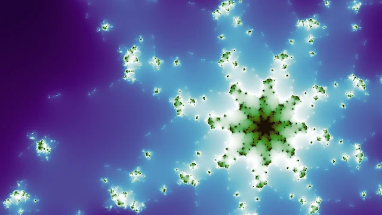
a Julia set at the rose mark

Iterating in the complex plane
The images are built in the complex plane: numbers of the form x + yi. Multiplication is the part that matters here. Writing a number as reiθ, squaring gives r2ei2θ: the distance from the origin is squared and the angle is doubled. Adding a constant then slides the result somewhere else before the next step. Repeating those two operations produces an orbit, z0, z1, z2, and onward, and orbits under a rule like that do not simply grow or settle: they spiral, fold back across themselves, and become extraordinarily sensitive to where they started. Starting points a hair apart can end up behaving completely differently, and the boundary between those behaviors is where all the structure on this site comes from.
The Mandelbrot set
The most famous escape-time rule is also the simplest. Pick a constant c, start the orbit at z0 = 0, and iterate:
Only two fates are possible: the orbit stays bounded forever, or it diverges to infinity. Once |z| exceeds 2 divergence is guaranteed, so escape can be detected after finitely many steps. The first step at which that happens is the orbit's escape time, and escape-time fractals are named for it.

To turn the loop into a picture, let each pixel supply a different constant c and start every orbit at z0 = 0. The Mandelbrot set is the set of c values whose orbits stay bounded forever, which no program can confirm by waiting. A renderer stops at a finite iteration cap instead: points that escaped are colored by how long they held out, and whatever is still bounded at the cap is treated as interior. What comes out is a dark interior wrapped in a halo of escape times that carries all of the visible structure.
What's remarkable is where all that detail comes from. Deep inside the set, nothing escapes; far outside, everything escapes in a few steps and the image is a bland gradient. Near the boundary, though, the tiniest nudge to c can flip a point between the two fates, and the escape time varies wildly at every scale a renderer can reach. Zoom in along the boundary and structure keeps arriving: spirals, filament tangles, and in many places miniature copies of the full set. That boundary zone is where this project spends its effort, and the search half of the pipeline (finding good locations) exists to navigate it.
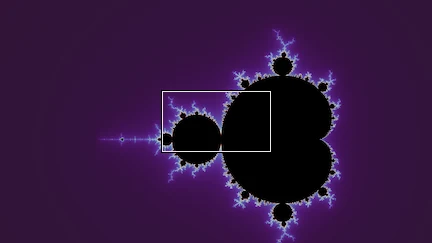
×1frame width 4.4
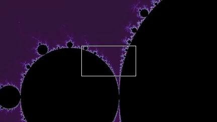
×4frame width 1.1
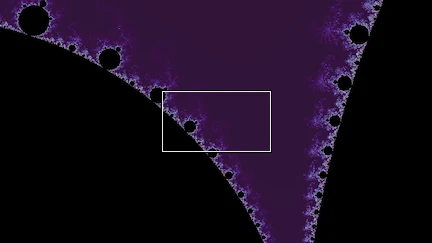
×16frame width 0.275
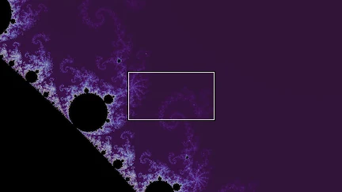
×64frame width 0.0688
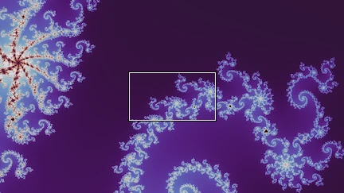
×256frame width 0.0172
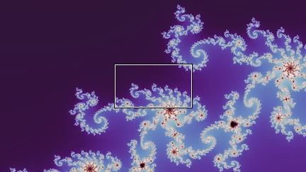
×1,024frame width 0.0043
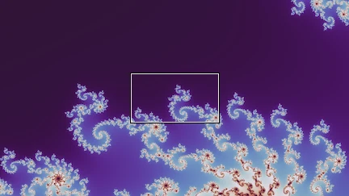
×4,096frame width 0.00107
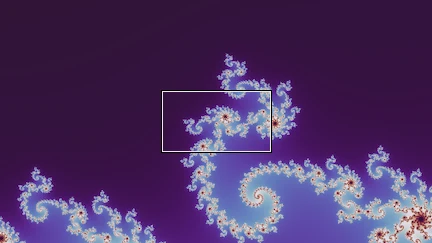
×16,384frame width 2.69×10−4
Julia sets
The same recurrence draws a second kind of picture. In the Mandelbrot parameter plane, every pixel is a different c and every orbit starts at z = 0. Flip that: fix one c, and let each pixel be a different starting z. The starting points that stay bounded make up the filled Julia set, and its boundary is the Julia set proper; the points that escape are colored by escape time exactly as before. Every value of c defines one of these dynamical planes, and the Mandelbrot set works as an atlas of them all. Choose c deep inside the set and the filled set is a solid, rounded blob; choose it far outside and the set shatters into disconnected dust; choose it near the boundary and the picture takes on the character of that neighborhood, unfurling the local spirals and filaments across the whole image. The pipeline uses this directly: when the search finds a rich neighborhood in a parameter plane, the c values there are recycled as seeds for the matching Julia search.
There's a theorem behind the blob-versus-dust split, and the cutoff is sharp. For the quadratic family the filled Julia set, and equivalently its boundary, is connected exactly when c lies in the Mandelbrot set, and it shatters the moment c leaves. The Mandelbrot set can therefore be defined as the connectedness locus of the quadratic family.
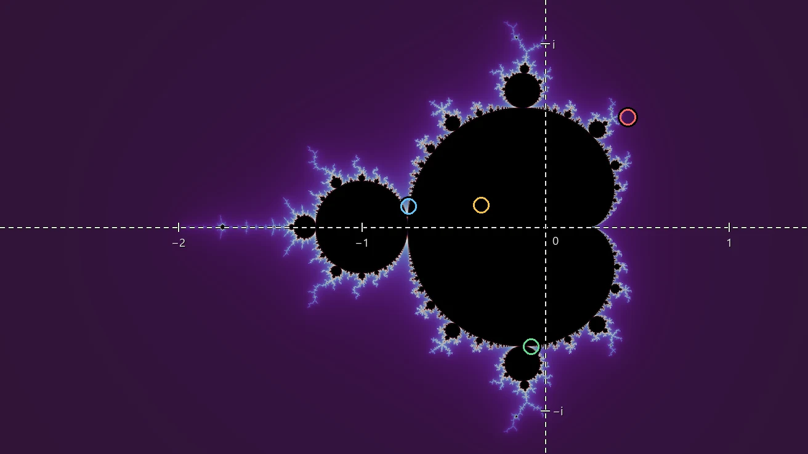
The Mandelbrot set. Each ring is one value of c; the Julia set it draws wears the same color below.
Multibrot sets
Nothing about the loop is specific to squaring. If you replace the square with a higher integer power, you get the multibrot sets, zn+1 = znd + c. The higher powers give the parameter plane a rotational symmetry the classic set doesn't have, and the number of folds is one less than the degree. So degree 3 renders two-fold, degree 4 three-fold, degree 5 four-fold, and degree 6 five-fold. Each degree also has its own Julia planes, made exactly the same way as before, and those come out d-fold, one more fold than the parameter plane. Here's why: if you rotate a starting point by a d-th root of unity, raising it to the d-th power undoes the rotation. So the rotated point and the original land on the same first iterate, and their two orbits match from there on.
Fractional degrees
The degree does not have to be a whole number. The renderer evaluates non-integer degrees too, and between two integers a fractional degree is caught between their lobe arrangements, with the next lobe part-grown. The range reaches below the quadratic degree as well, and down there it is not interpolating between anything: z1.8 + c is a set of its own.
Non-integer powers cause a problem, though. Raising a complex number to a fractional power goes through the complex logarithm, which has no single consistent value, so the rule becomes single-valued only once a branch is chosen. This renderer uses the principal branch, whose cut lies along the negative real axis, and the chosen value jumps across that cut. The pictures therefore carry sharp seams wherever an iterate crosses it. The seam isn't an artifact I could smooth away. It comes with using a single-valued branch at a fractional degree, and picking a different branch would move it rather than remove it. I find the discontinuities jarring, so I made fractional degrees render-only. The renderer can draw them, but I left them out of the explorer and the wallpaper search.
z²·¹ + c
z²·⁵ + c
z²·⁹ + c
z³·⁵ + c
z⁴·⁵ + c
z³·⁵ + c×8 into the cut
Phoenix fractals
The phoenix fractals change the rule itself rather than the power. In every family above, the next value depends only on the current one. The phoenix iteration adds one step of memory:
where the new constant p sets how strongly the past feeds back into each step. Orbits are steered by where they just were, and the renders grow the feathery, plume-like structures the family is known for. A phoenix image is drawn the way a Julia set is: fix the constants, let each pixel be a starting z. So I don't have a separate "phoenix Julia" variant, since the family already works that way.
The classic render uses one celebrated pair of constants found by Shigehiro Ushiki in 1988, and this project renders other values of c and p as well. The formula doesn't show it, but the very first step has no previous value to reach back to, so z−1, the value before the orbit began, needs its own seed, which is effectively a third constant alongside c and p. The classic picture seeds it at zero. A nonzero seed gives a different set even when c and p stay fixed, and I vary that seed too.
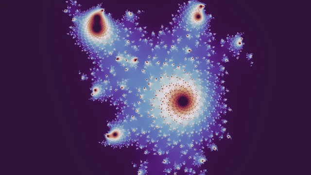
c = 0.2305 + 0.1493i · p = −0.2441 − 0.7109i
The project's families
Altogether, the wallpapers here come from the Mandelbrot set and its Julia sets, the multibrot sets of degrees 3 through 6 and their Julia sets, and Phoenix. These vary enormously in how easily they give up good images: some produce striking material almost anywhere along the boundary, others need real hunting. Because of that, I track each family's supply separately during the search, so the easiest family to photograph doesn't quietly eat up the whole search effort. Finding good locations covers how that works. Gallery curation then chooses from the mixed pool of candidates without a family quota of its own, because its diversity rules act on locations, visual similarity, color, and rendering mode rather than on fractal family.
Locations
A location records the geometry needed to reproduce one view: the fractal family and its constants, the center of the frame, and the width of the complex plane the frame spans, with the height following from the fixed 16:9 aspect ratio. Halving the width zooms in 2×, and since the boundary is detailed at every scale you can keep halving for a very long way; ordinary double-precision arithmetic gives out first, at magnifications around ten trillion to one (deep zoom rendering covers going further). Finding good locations covers the search through that space, and rendering fundamentals covers turning what an orbit did into an image worth keeping.